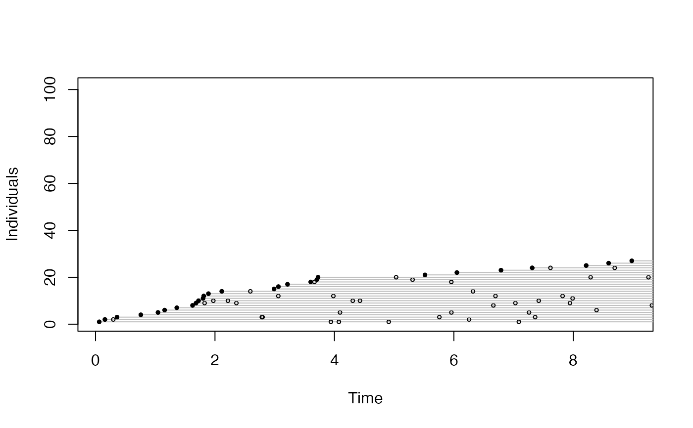

bSims simulation functions
bsims_init.RdFunctions to initialize, populate, animate, detect, and transcribe simulated birds in a point count.
bsims_init(extent = 10, road = 0, edge = 0, offset = 0) bsims_populate(x, density = 1, abund_fun = NULL, xy_fun = NULL, margin = 0, maxit = 100, fail = FALSE, ...) bsims_animate(x, vocal_rate = 1, move_rate = 0, duration = 10, movement = 0, mixture = 1, avoid = c("none", "R", "ER"), initial_location=FALSE, allow_overlap=TRUE, ...) bsims_detect(x, xy = c(0, 0), tau = 1, dist_fun = NULL, event_type = c("vocal", "move", "both"), ...) bsims_transcribe(x, tint = NULL, rint = Inf, error = 0, condition=c("event1", "det1", "alldet"), event_type=NULL, perception=NULL, ...) bsims_all(...) # S3 method for bsims_landscape print(x, ...) # S3 method for bsims_population print(x, ...) # S3 method for bsims_events print(x, ...) # S3 method for bsims_detections print(x, ...) # S3 method for bsims_transcript print(x, ...) # S3 method for bsims_all print(x, ...)
Arguments
| extent | extent of simulation area, an extent x extent square with (0,0) at the center. |
|---|---|
| road | half width of the road stratum (perpendicular to the y axis). |
| edge | width of edge, same width on both sides of the road stratum. |
| offset | offset to apply to road and edge strata relative to the center in the x direction. |
| x | a simulation object. |
| density | population density, D, recycled 3x for the 3 strata (H: habitat, E: edge, R: road). |
| abund_fun | function to simulate abundance, N ~ Poisson(lambda), lambda=DA by default. |
| xy_fun | function used to simulate nest locations, see |
| margin, maxit, fail | arguments passed to |
| vocal_rate, move_rate | Vocal and movement rates (see |
| duration | total time duration to consider (in minutes), passed to |
| movement | standard deviation for a bivariate Normal kernel to simulate
locations centered at the nest location, passed to |
| mixture | behavior based finite mixture group proportions. |
| avoid | range along the x axis to avoid with respect to movement locations,
passed to |
| initial_location | logical, |
| allow_overlap | logical, allowing overlap between neighboring nests when movement is involved.
If |
| xy | a vector of x and y coordinates describing the position of the observer. |
| tau | parameter of the distance function.
Can be a single numeric value;
a vector of length 2 to provide parameters for
vocalization (1st value) and movement (2nd value) related events;
(H: habitat, E: edge, R: road, in this order);
a vector of length 3 to provide parameters for the 3 strata
(H: habitat, E: edge, R: road);
or a 3 x 2 matrix combining strata (rows) and
vocalization/movement (columns) related parameters.
Segmented sound attenuation is used when the values are different
in the 3 strata (see |
| dist_fun | distance function (1st argument is distance, second is |
| event_type | type of events to access (vocal, movement, or both).
Inherits value from input object when |
| tint | time interval break points in minutes. |
| rint | distance interval break points in units of 100 meter. |
| condition | conditioning type to define availability for each individual:
|
| error | log scale standard deviation for distance estimation error,
see |
| perception | perceived number of individuals relative to the actual number of individuals.
A non-negative number (<1 values lead to under counting,
>1 values lead to over counting),
or |
| ... | other arguments passed to underlying functions.
For the |
Details
The functions capturing the simulation layers
are supposed to be called in sequence,
allowing to simulate multiple realities by keeping
preceding layers intact. Construction allows easy piping.
The bsims_all function is a wrapper for the bsims_*
layer functions.
The simulations follow time-removal and distance sampling models based on Matsuoka et al. (2012) <doi:10.1525/auk.2012.11190>, Solymos et al. (2013) <doi:10.1111/2041-210X.12106>, and Solymos et al. (2018) <doi:10.1650/CONDOR-18-32.1>, and sound attenuation experiments by Yip et al. (2017) <doi:10.1650/CONDOR-16-93.1>.
Value
bsims_init returns a landscape object.
bsims_populate returns a population object.
bsims_animate returns an events object.
bsims_detect returns a detections object.
bsims_transcribe returns a transcript object.
get_table returns the removal table.
bsims_all returns a closure with
$settings(), $new(recover = FALSE),
and $replicate(B, recover = FALSE, cl = NULL)
functions. The settings function returns the input arguments as a list;
the new function returns a single transcript object;
the replicate function takes an argument for the
number of replicates (B) and returns a list of transcript objects
with B elements.
The cl argument is used to parallelize the work,
can be a numeric value on Unix/Linux/OSX, or a cluster object on any OS,
see examples.
The `recover = TRUE` argument allows to run simulations with error
catching based on try.
Note that simulated objects returned by bsims_all
will contain different realizations and all the conditionally
independent layers. Use a layered approach if former layers are meant
to be kept identical across runs.
References
Matsuoka, S. M., Bayne, E. M., Solymos, P., Fontaine, P., Cumming, S. G., Schmiegelow, F. K. A., & Song, S. A., 2012. Using binomial distance-sampling models to estimate the effective detection radius of point-counts surveys across boreal Canada. Auk, 129: 268--282. <doi:10.1525/auk.2012.11190>
Solymos, P., Matsuoka, S. M., Bayne, E. M., Lele, S. R., Fontaine, P., Cumming, S. G., Stralberg, D., Schmiegelow, F. K. A. & Song, S. J., 2013. Calibrating indices of avian density from non-standardized survey data: making the most of a messy situation. Methods in Ecology and Evolution, 4: 1047--1058. <doi:10.1111/2041-210X.12106>
Solymos, P., Matsuoka, S. M., Cumming, S. G., Stralberg, D., Fontaine, P., Schmiegelow, F. K. A., Song, S. J., and Bayne, E. M., 2018. Evaluating time-removal models for estimating availability of boreal birds during point-count surveys: sample size requirements and model complexity. Condor, 120: 765--786. <doi:10.1650/CONDOR-18-32.1>
Yip, D. A., Bayne, E. M., Solymos, P., Campbell, J., and Proppe, J. D., 2017. Sound attenuation in forested and roadside environments: implications for avian point count surveys. Condor, 119: 73--84. <doi:10.1650/CONDOR-16-93.1>
See also
Plotting functions:
plot.bsims_landscape
Getter functions:
get_nests,
get_events,
get_detections,
get_abundance,
get_density
get_table
Shiny apps:
run_app
Examples
phi <- 0.5 tau <- 1:3 dur <- 10 rbr <- c(0.5, 1, 1.5, Inf) tbr <- c(3, 5, 10) (l <- bsims_init(10, 0.5, 1))#> bSims landscape #> 1 km x 1 km #> stratification: HER(p <- bsims_populate(l, 1))#> bSims population #> 1 km x 1 km #> stratification: HER #> total abundance: 89(a <- bsims_animate(p, vocal_rate=phi, duration=dur))#> bSims events #> 1 km x 1 km #> stratification: HER #> total abundance: 89 #> duration: 10 min(o <- bsims_detect(a, tau=tau))#> bSims detections #> 1 km x 1 km #> stratification: HER #> total abundance: 89 #> duration: 10 min #> detected: 32 heard(x <- bsims_transcribe(o, tint=tbr, rint=rbr))#> bSims transcript #> 1 km x 1 km #> stratification: HER #> total abundance: 89 #> duration: 10 min #> detected: 32 heard #> 1st event detected by breaks: #> [0, 3, 5, 10 min] #> [0, 50, 100, 150, Inf m]plot(x)get_table(x, "removal")#> 0-3min 3-5min 5-10min #> 0-50m 0 0 0 #> 50-100m 2 0 0 #> 100-150m 2 1 0 #> 150+m 7 0 2get_table(x, "visits")#> 0-3min 3-5min 5-10min #> 0-50m 0 0 0 #> 50-100m 2 1 1 #> 100-150m 2 3 5 #> 150+m 7 6 6#> x y t v i #> 1 -2.3401644 -2.8527517 0.03530175 1 9 #> 2 -2.2627545 0.5759206 0.03671147 1 10 #> 3 -0.0575831 2.5478251 0.05696669 1 52 #> 4 -2.6777408 4.0848588 0.08751628 1 4 #> 5 1.2101658 1.8188797 0.10244937 1 53 #> 6 -0.6398754 0.7921080 0.13954534 1 36#> x y t v d i j #> 3 -0.0575831 2.5478251 0.05696669 1 2.5484757 52 52 #> 6 -0.6398754 0.7921080 0.13954534 1 1.0182709 36 36 #> 8 -1.8415121 -0.1032800 0.17209894 1 1.8444060 21 21 #> 30 -0.2132248 0.4793912 0.63565147 1 0.5246720 42 42 #> 35 -0.2132248 0.4793912 0.77150555 1 0.5246720 42 42 #> 54 0.3010540 -0.5838783 1.23701148 1 0.6569227 44 44## wrapper function for all the bsims_* layers b <- bsims_all(road=1, density=0.5, tint=tbr, rint=rbr) ## alternatively: supply a list #settings <- list(road=1, density=0.5, tint=tbr, rint=rbr) #b <- bsims_all(settings) b$settings()#> $road #> [1] 1 #> #> $density #> [1] 0.5 #> #> $tint #> [1] 3 5 10 #> #> $rint #> [1] 0.5 1.0 1.5 Inf #>b$new()#> bSims transcript #> 1 km x 1 km #> stratification: HR #> total abundance: 61 #> duration: 10 min #> detected: 7 heard #> 1st event detected by breaks: #> [0, 3, 5, 10 min] #> [0, 50, 100, 150, Inf m]#> [[1]] #> 0-3min 3-5min 5-10min #> 0-50m 0 0 0 #> 50-100m 0 0 0 #> 100-150m 1 0 0 #> 150+m 0 0 0 #> #> [[2]] #> 0-3min 3-5min 5-10min #> 0-50m 0 0 0 #> 50-100m 1 0 0 #> 100-150m 0 0 0 #> 150+m 0 0 0 #> #> [[3]] #> 0-3min 3-5min 5-10min #> 0-50m 0 0 0 #> 50-100m 3 0 0 #> 100-150m 0 0 0 #> 150+m 0 0 0 #># \donttest{ ## parallel simulations library(parallel) b <- bsims_all(density=0.5) B <- 4 # number of runs nc <- 2 # number of cores ## sequential system.time(bb <- b$replicate(B, cl=NULL))#> user system elapsed #> 0.543 0.000 0.544## parallel clusters cl <- makeCluster(nc) ## note: loading the package is optional system.time(clusterEvalQ(cl, library(bSims)))#> Error in checkForRemoteErrors(lapply(cl, recvResult)): 2 nodes produced errors; first error: there is no package called ‘bSims’#>#> Error in checkForRemoteErrors(lapply(cl, recvResult)): 2 nodes produced errors; first error: there is no package called ‘bSims’#>stopCluster(cl) ## parallel forking if (.Platform$OS.type != "windows") { system.time(bb <- b$replicate(B, cl=nc)) }#> user system elapsed #> 0.566 0.127 0.719# }